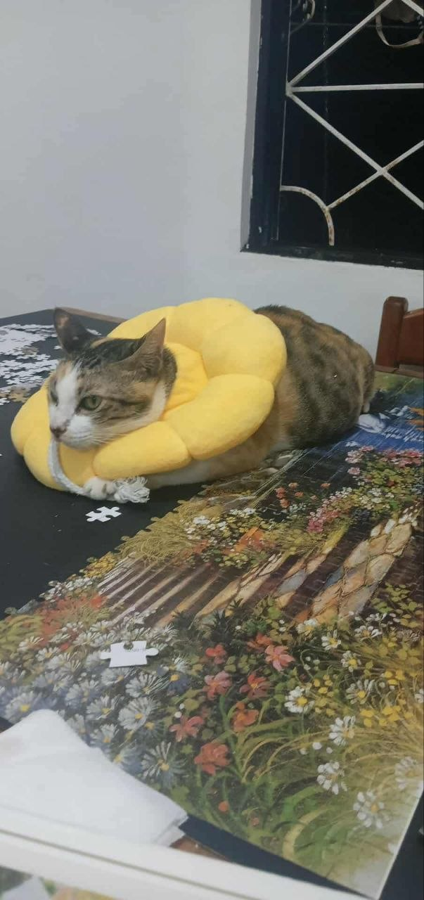
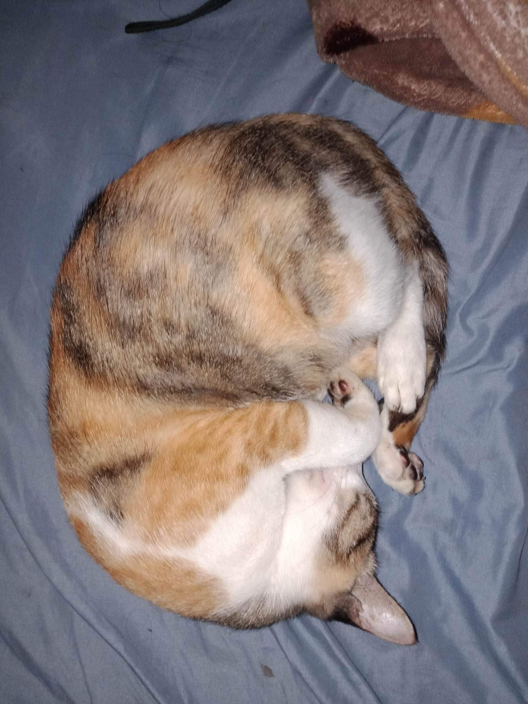
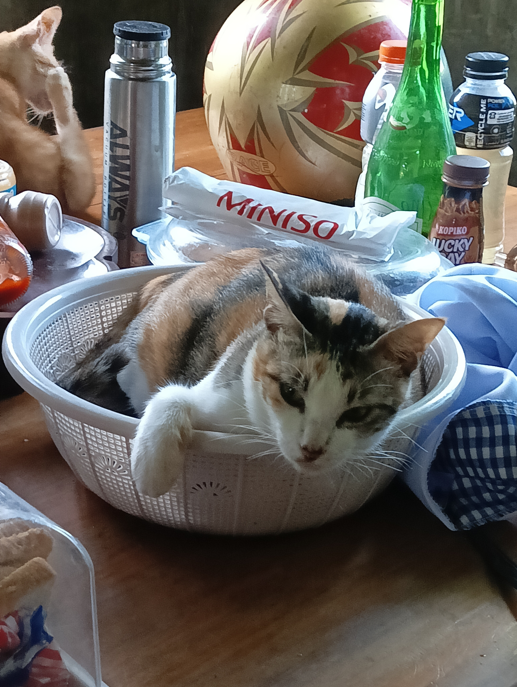
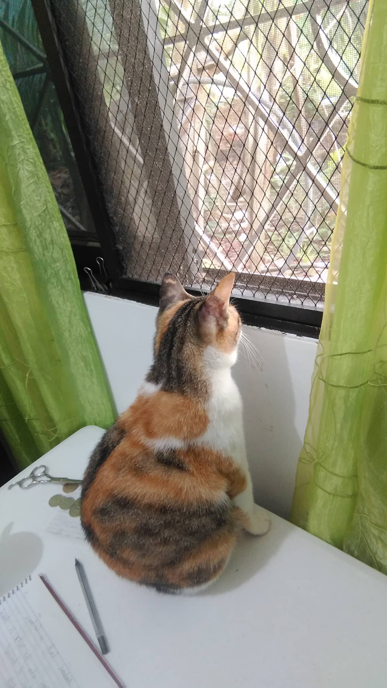

Mikay's work




Queen Mikay (formerly Princess Mikay) is a maldita calico chonk cat with different transformation forms. Born in 2019 in Pantukan, Davao de Oro, she is a genius cat who gave birth to many beautiful sons and daughters but has since retired (she's now spayed). Her favorite activities are sleeping and occasionally playing with her babies. She is very impatient and will growl at you if you overstay your welcome.



